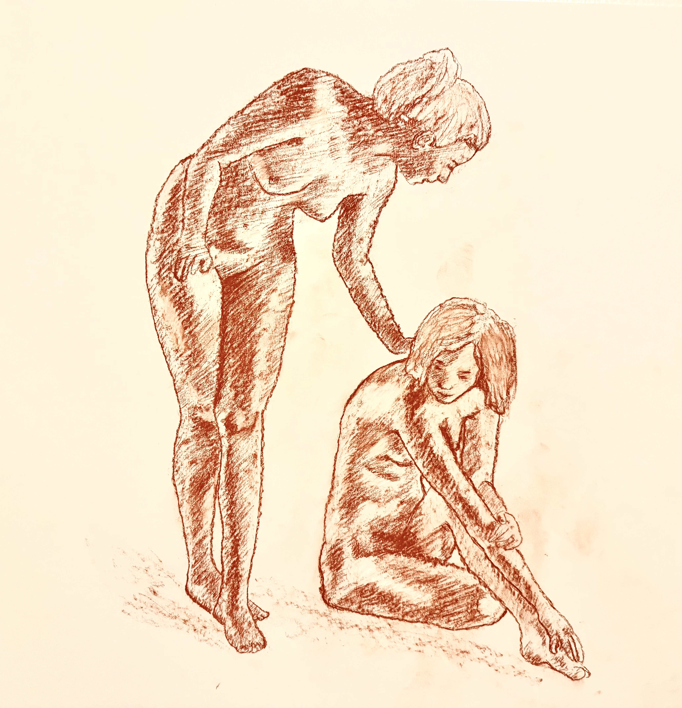
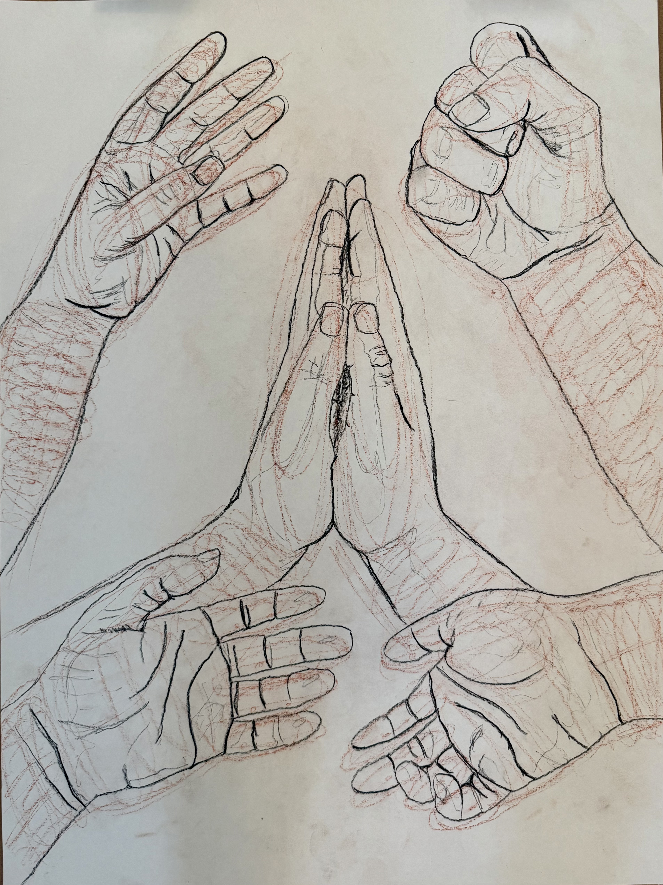

Lines
Process fragment
Repetitive mark-making and gestural line studies. Lines are the fundamental building blocks of anatomical drawing.
Study Collection

Lines Study 01: Implied Lines

Lines Study 02: Ink Lines

Lines Study 03: Single-Line Hatching

Lines Study 04: Planar Analysis Lines

Lines Study 05: Gesture Lines

Lines Study 06: Variety in Lines